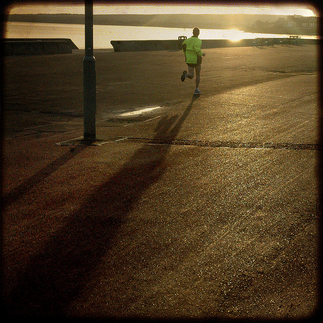

何时按下快门
何时按下快门--一件食指一缩便能做成的简单事，按快门的时间相对静止的事物来说无所谓，对运动的物体来说则变得十分重要。按照惯例，拍摄者在按下快门前总是需要等待。等什么呢？等待变化中的景物达到一个理想的瞬间。在这个瞬间，主体处于平衡状态，事物都按照构想中的方式安排好了位置。等到行人电线杆后面走出，等到摩托车手点满了整个画面，他们才按下快门。
但是这样的照片在即兴拍摄的照片中并不多见，因为它们是精心构思之作。难道决定何时拍摄照片不也是构图吗？只要看上去舒服，经过构图的即兴拍摄之作表现的是合乎逻辑的真实，尽管其画面是稍加修饰的。如果你想随意进行即兴拍摄的话，你将难以找到理想的画面。你所拍到的会是从公园长椅上起身的，姿态尴尬的人，是用手帕遮起脸来的人，是被画框的边界所割裂的汽车。这就象事先不打招呼突然闯入朋友家里一样，你所看到的不是平时所见的井井有条的景象，而是地板上乱扔着的鞋子、报纸，桌子上积起的尘埃。
表现那种措手不及的尴尬相就是表现极少为人所拍摄的景象。当然，一旦它变得平常，也就推动了使人惊奇的魅力。但是，使人觉得矛盾的是，这种真实性极强的镜头靠随意地按下快门是捕捉不到的，它只有靠耐心的等待才能获取，要等到主体达到的那种“理想的”尴尬状态时，才能按下快门。即使所谓的纪实性图片，也要等到画面看上去正是你想表现的景象时才能按下快门。
图片
